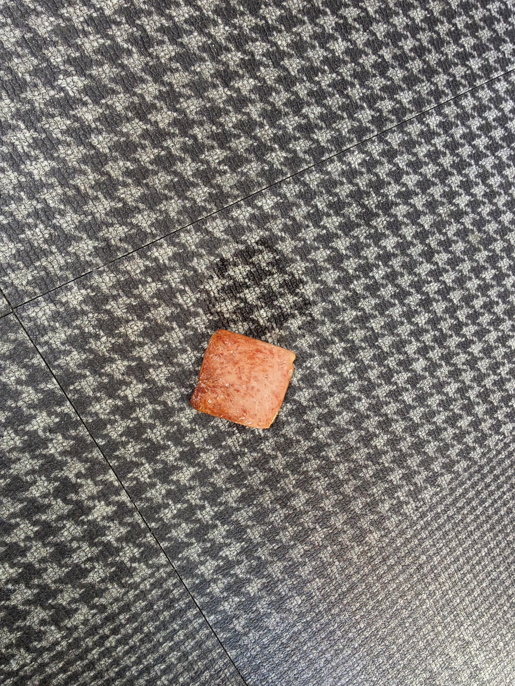

땅바닥에 스팸 떨어트림...

땅바닥에 스팸 떨어트림...
이미 뱃속에 앉혔어야지 뭐하냐
줏어먹어
안주워 먹는거 보니까 아직 덜 망했네
3초안에 주으면 되는데....사진 찍느라 놓쳣네
스팸 떨어졌다고 망할 인생이였으면 난 이미 대학때 강의실에서 핸드폰에 켜져있던 야동 재생됐을때 창문 밖으로 뛰어 내렸어야됨
이걸 사네
닉봐라 그뒤로 죽지못해 사는구나
이걸 안뛰네 ㅋㅋ
ㅋㅋㅋㅋㅋ 수업 끝나고 에타에 올라왔을때 잠깐 원룸 창밖으로 뛰어내려서 뒤질까 했는데 그래도 학비낸게 아까워서 끝까지다님
배가 불렀네! 빨리 안주워먹어?!
땅바닥이 매직아이같아
개드립컷 왜케 높아졌냐
깨알 상식)
저 무늬의 이름은 개 이빨 패턴(하운즈투스)임.
위치 이동!
보통 사람은 다시 주워서 먹거나 버리고
커뮤 중독은 이거보면서 사진 찍는 만화 본것같은데..